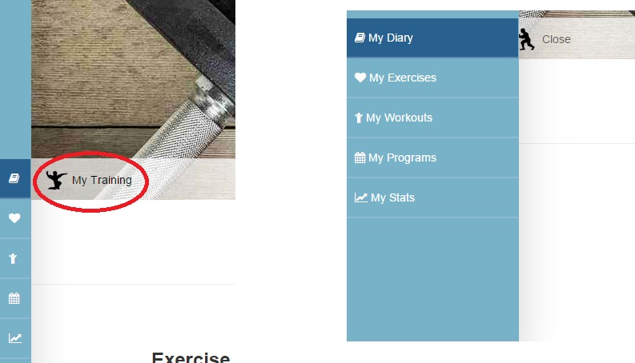
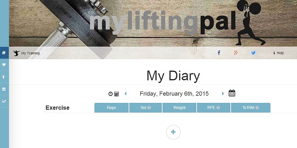
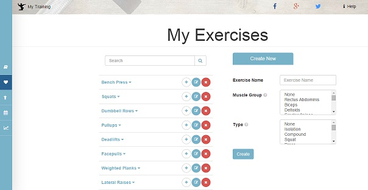
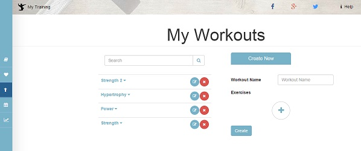
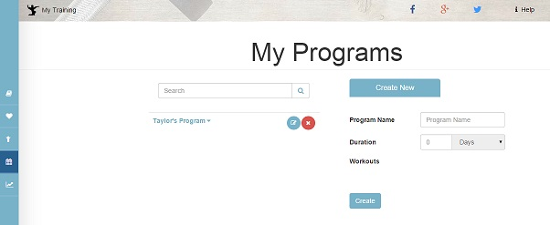
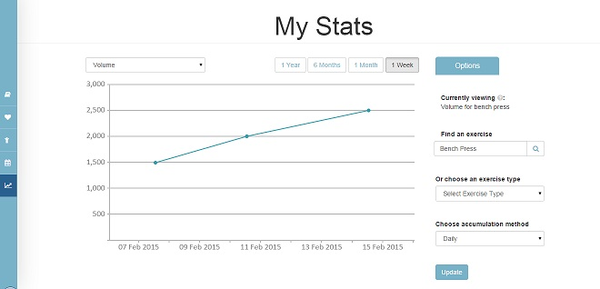

    <div class="modal-dialog modal-md">
        <div class="modal-content">
            <div class="modal-header">
            <button type="button" class="close" data-dismiss="modal" aria-hidden="true"><i class="fa fa-times"></i></button>
            <h4 class="modal-title" id="myModalLabel">Welcome to MyLiftingPal!</h4>
            </div>
            <div class="modal-body">
                <div class="part1">
Just a few things before you get started!<br/><br/>


MyLiftingPal is a system designed for tracking <strong>intelligent programming</strong>. As such, it can be a little intimidating at first. But once you understand all the bells and whistles, you’ll wonder how you ever lived without it.<br/><br/>
Follow through this short introduction to get yourself started.

                </div>
                <div class="part2" style="display:none;">
                    
                    The <strong>main sections</strong> can be found in the <strong>sidebar menu</strong> on the left. To open it, click the button shown in the image.<br/><br/>
                    
You have several options here which we'll run through now. 

                </div>
                <div class="part3" style="display:none;">
                    
                <strong>My Diary</strong><br/><br/>
                This is your default home page and is where the bulk of your time will be spent. <br/>
                Here you can track your exercises, workouts and programs.
                </div> 
                <div class="part4" style="display:none;">
                    
                <strong>My Exercises</strong><br/><br/>    
                Here is where you <strong>create new exercises</strong> if they don’t already exist in the exercise database. <br/>
                Don’t worry, all the common exercises should already be in there. <br/><br/>
                But if you want to do a <em>swiss ball one legged squat while holding two cats</em> (not recommended), then you may need to add this yourself.
                </div> 
                <div class="part5" style="display:none;">
                    
                    <strong>My Workouts</strong><br/><br/>
                Here’s where a time saver comes in! <br/>
                This is a place where you can <strong>create workouts</strong> which group exercises you usually do in one day. <br/>
                If you have a workout created, you can add this to your diary and all the hassle of manually adding exercises one by one is done for you. <br/><br/>
                
                On top of this, just like exercises, common workouts have already been created. <br/>
                Say you want a <em>back workout</em>? A <em>powerlifting strength workout</em>?<br/>
                Look it up on your diary page and see what other users have already created.
                </div> 
                <div class="part6" style="display:none;">
                    
                    <strong>My Programs</strong><br/><br/>
                This takes time saving to the next level! <br/>
                Here you can <strong>create programs</strong> which group a series of workouts you do throughout the week, cycle, or even year. Plan your programming and reap the benefits. <br/>
                When you add a program to your diary, the planned workouts get added automatically. <br/><br/> 
                
                You can also find common programs other users have created. <br/>
                Want to do <em>Smolov</em>? <em>5/3/1</em>? Easy. Just search for it on your diary page and add it. 
                </div> 
                <div class="part7" style="display:none;">
                    
                    <strong>My Stats</strong><br/><br/>
                So what’s the point in tracking anyway? Paper does the job right? <br/>
                Well what paper doesn’t give you is an <strong>in-depth analysis of your training progression</strong>. <br/>
                Your stats page gives you an overview of your lifting progression over a length of time. <br/><br/>
                
                I won’t go into too many details here, but basically this gives you all the tools you need so you know you are heading in the right direction with your training. <br/>
                Make sure you check out the help page to find out more.
                </div> 
                <div class="part8" style="display:none;">
                That’s all you need to know for now! You’re ready to get started. <br/><br/>
                
                If you need more detailed help, make sure you go to the help page. <br/><br/>
                
                <strong>Now go have a lift!</strong>
                </div>  
                
            </div>
            <div class="modal-footer">
                <button type="button" class="btn btn-default part8" onclick="$.cookie('mlptutorial', true, {expires: 1});" data-dismiss="modal">Skip</button>
                
                <button type="button" class="btn btn-primary accept-continue part1" onclick="$('.part1').hide();$('.part2').show();">Continue</button>
                <button type="button" class="btn btn-primary accept-continue part2" style="display:none;" onclick="$('.part2').hide();$('.part3').show();">Continue</button>
                <button type="button" class="btn btn-primary accept-continue part3" style="display:none;" onclick="$('.part3').hide();$('.part4').show();">Continue</button>
                <button type="button" class="btn btn-primary accept-continue part4" style="display:none;" onclick="$('.part4').hide();$('.part5').show();">Continue</button>
                <button type="button" class="btn btn-primary accept-continue part5" style="display:none;" onclick="$('.part5').hide();$('.part6').show();">Continue</button>
                <button type="button" class="btn btn-primary accept-continue part6" style="display:none;" onclick="$('.part6').hide();$('.part7').show();">Continue</button>
                <button type="button" class="btn btn-primary accept-continue part7" style="display:none;" onclick="$('.part7').hide();$('.part8').show();">Continue</button>

                <button type="button" class="btn btn-primary accept-continue part8" style="display:none;" onclick="$.cookie('mlptutorial', true, {expires: 1});" data-dismiss="modal">Get Started!</button>
        </div>
    </div>
  </div>